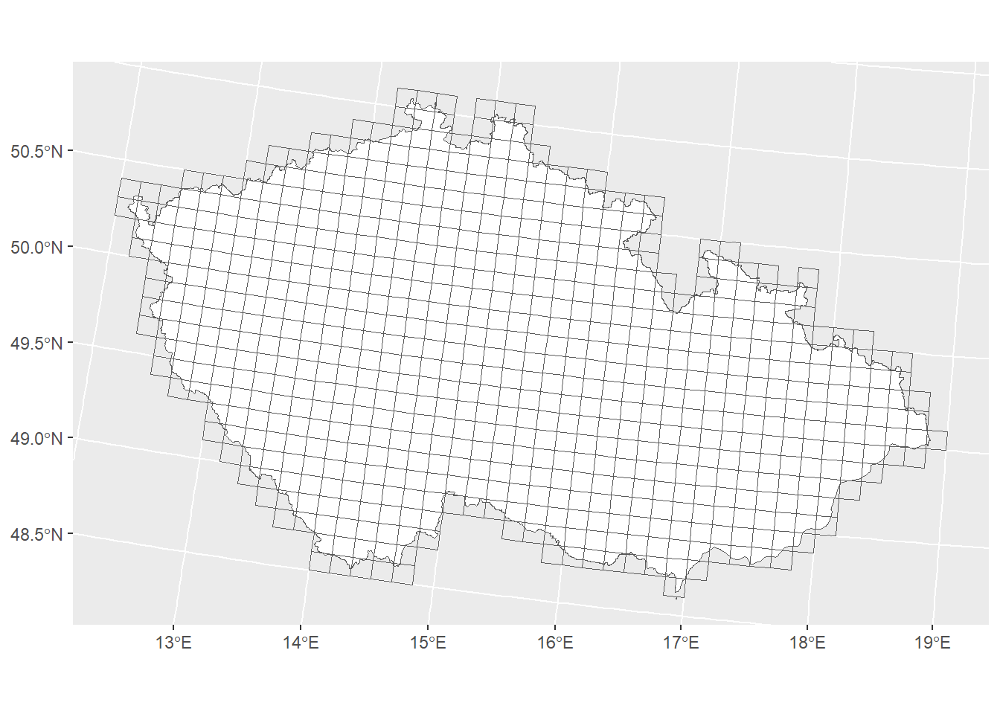
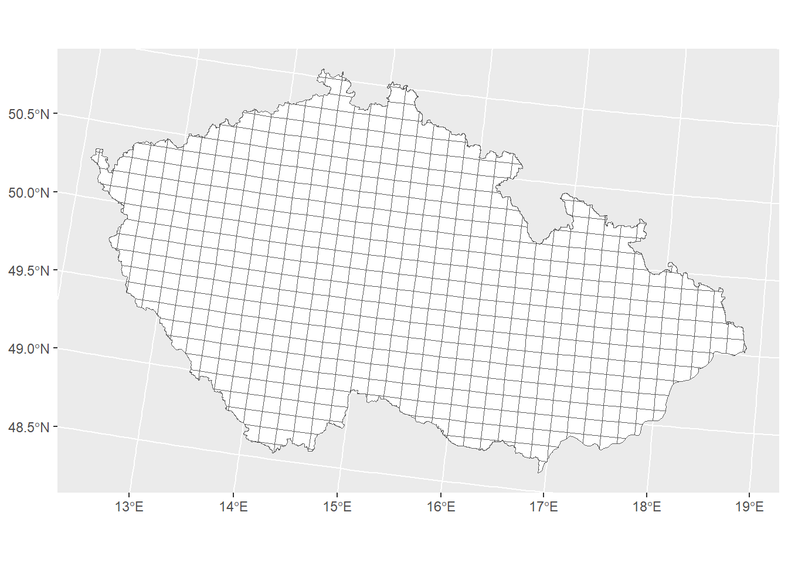
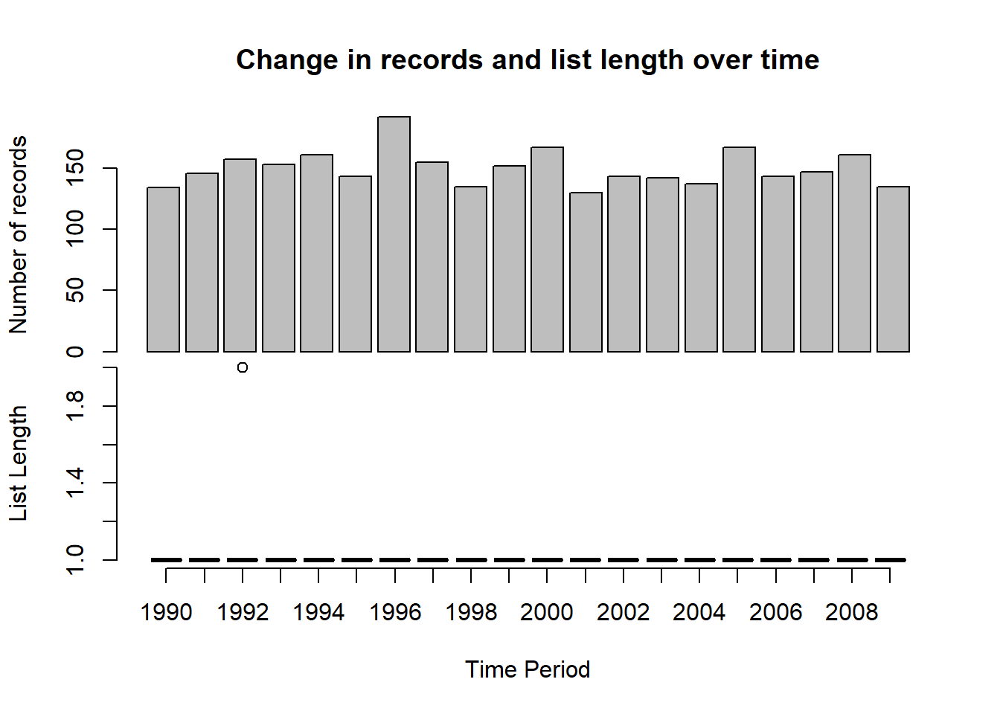
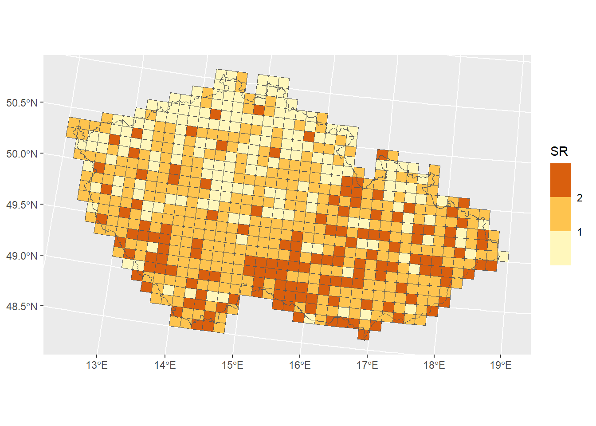
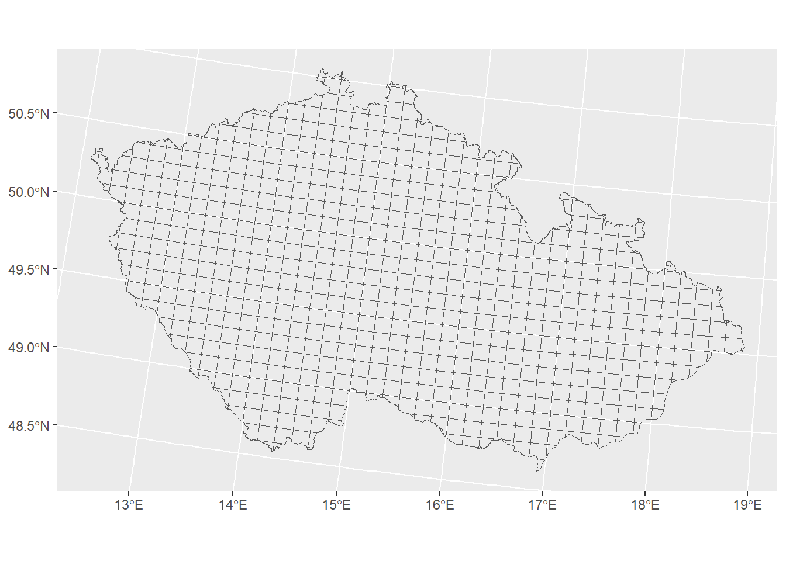
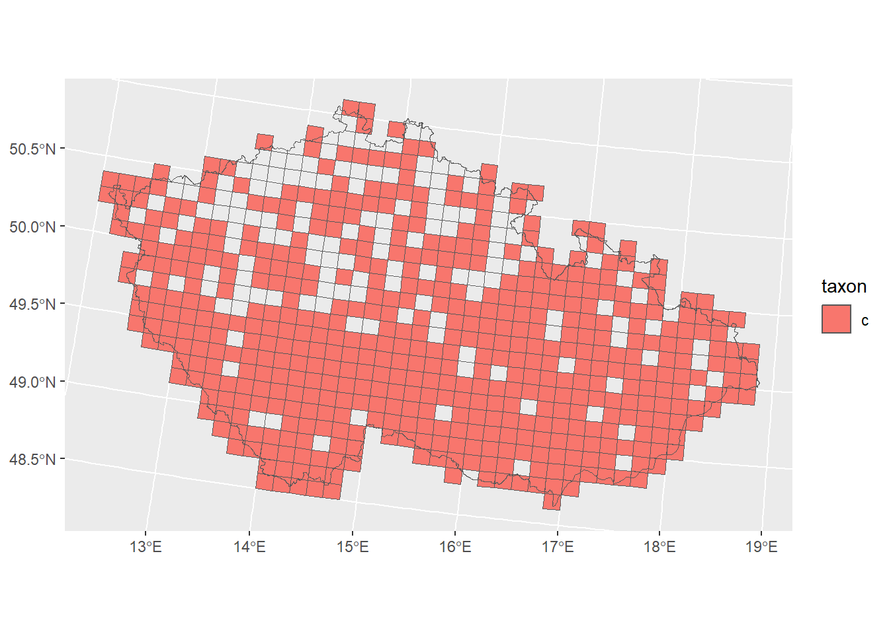
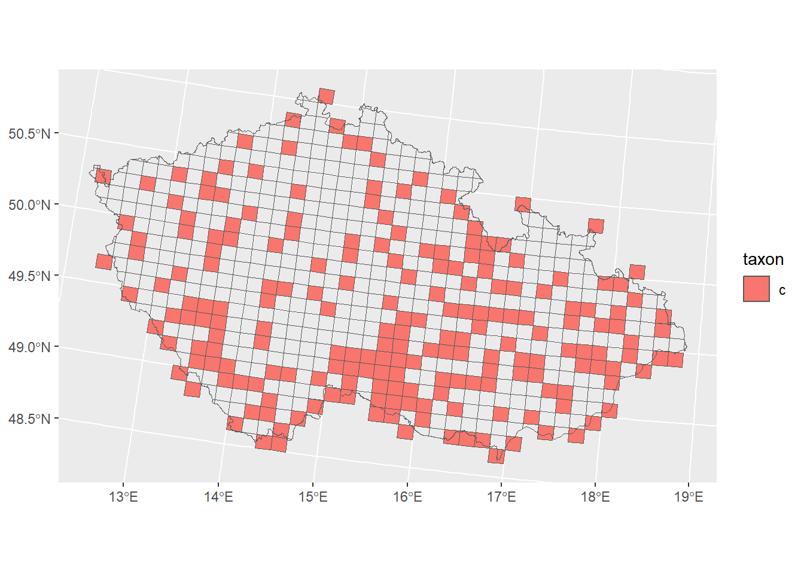
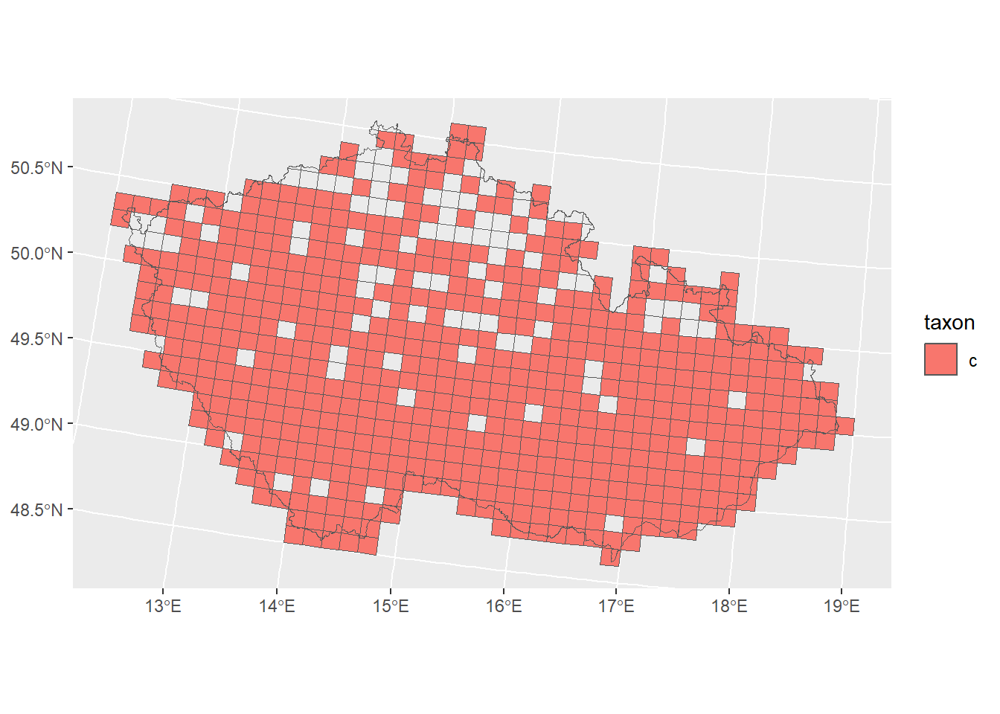

rm(list=ls())
pacman::p_load(sparta, rnaturalearth, sf, raster, tidyverse, fractaldim)SimulatedAtlasData
Simulating Atlas data
The purpose of this script is to simulate simple Atlas data to test some of the hypotheses in a known environment and determine which techniques best recover the parameters that were used to simulate the data.
Steps:
Read in Libraries
Get the standard grid of Czechia & its’ borders
Simulate presence data for Czechia
1. Libraries
2. Create a grid layer of the Czech Republic (POLYGONS)
# Borders of Czech Republic
CZ_borders <- st_read('../data/CZE_adm0.gpkg')Reading layer `CZE_adm0' from data source
`C:\Users\wolke\OneDrive - CZU v Praze\Dokumenty\GitHub\BEAST_General_Procedures\data\CZE_adm0.gpkg'
using driver `GPKG'
Simple feature collection with 1 feature and 70 fields
Geometry type: MULTIPOLYGON
Dimension: XY
Bounding box: xmin: 12.08586 ymin: 48.54084 xmax: 18.86253 ymax: 51.05438
Geodetic CRS: WGS 84CZ_borders <- CZ_borders %>% select(WBINCOME, WBDEBT, Shape_Leng, Shape_Area)
# 100km2 grids of Czech Republic
CZ_grids <- st_read('../data/KvadratyCR_JTSK.gpkg')Reading layer `KvadratyCR_JTSK' from data source
`C:\Users\wolke\OneDrive - CZU v Praze\Dokumenty\GitHub\BEAST_General_Procedures\data\KvadratyCR_JTSK.gpkg'
using driver `GPKG'
Simple feature collection with 678 features and 10 fields
Geometry type: POLYGON
Dimension: XY
Bounding box: xmin: -912065.7 ymin: -1229672 xmax: -421278.2 ymax: -928997.8
Projected CRS: S-JTSK / Krovak East North## Do they have the same CRS?
st_crs(CZ_borders) == st_crs(CZ_grids) # no[1] FALSE# Transform the borders to have the same CRS so we can cut by the borders:
CZ_borders <- st_transform(CZ_borders, crs = st_crs(CZ_grids)) # the same CRS as the CZ_grids layer
# Plot transformed:
ggplot() +
geom_sf(data=CZ_borders, fill='white') +
geom_sf(data=CZ_grids, fill=NA) 
# Crop cells to borders:
CZ_cropped <- st_intersection(CZ_grids, CZ_borders)Warning: attribute variables are assumed to be spatially constant throughout
all geometries# Plot cropped map:
ggplot() +
geom_sf(data=CZ_cropped, fill='white')
# extract dataframe from grid to extract the details of the grid cells:
## We need this to simulate presence data based on the cells (OBJECTID)
Grid_cells <- CZ_grids %>% select(OBJECTID, AREA, X, Y)
# Remove columns that produce clutter:
CZ_sf <- CZ_cropped %>%
select(OBJECTID, ENTITY, AREA, PERIMETE, X, Y, WBINCOME, WBDEBT)3. Simulating presence data (POINTS)
# extract parameters from Czechia map:
CZ_nSites <- length(unique(Grid_cells$OBJECTID))
# Create data
n <- 3000 # size of dataset
nyr <- 20 # number of years in data
nSamples <- 10000 # set number of dates
nSites <- CZ_nSites # set number of sites
set.seed(125) # set a random seed
# Create somes dates
first <- as.Date(strptime("1990/01/01", "%Y/%m/%d"))
last <- as.Date(strptime(paste(1990+(nyr-1),"/12/31", sep=''), "%Y/%m/%d"))
dt <- last-first
rDates <- first + (runif(nSamples)*dt)
# taxa are set semi-randomly
taxa_probabilities <- seq(from = 0.1, to = 0.7, length.out = 3)
taxa <- sample(letters[1:3], size = n, TRUE, prob = taxa_probabilities) # 3 taxa
# sites are visited semi-randomly
site_probabilities <- seq(from = 0.1, to = 0.7, length.out = nSites)
OBJECTID <- sample(paste(1:nSites), size = n, TRUE, prob = site_probabilities)
# the date of visit is selected semi-randomly from those created earlier
time_probabilities <- seq(from = 0.1, to = 0.7, length.out = nSamples)
time_period <- sample(rDates, size = n, TRUE, prob = time_probabilities)
myData <- data.frame(taxa, OBJECTID, time_period)
# Let's have a look at the my example data
head(myData) taxa OBJECTID time_period
1 b 339 1991-05-30
2 c 630 2002-01-13
3 c 137 2004-10-03
4 b 561 2003-06-30
5 c 474 2003-04-21
6 c 496 1993-04-24myData$OBJECTID <- as.numeric(myData$OBJECTID)
myData %>% arrange(OBJECTID) %>% group_by(OBJECTID)# A tibble: 3,000 × 3
# Groups: OBJECTID [640]
taxa OBJECTID time_period
<chr> <dbl> <date>
1 b 2 2008-06-01
2 b 4 2007-10-10
3 a 4 1991-10-12
4 c 5 2002-04-15
5 c 6 2004-06-22
6 b 6 1999-05-01
7 c 6 2008-06-23
8 c 8 2006-06-09
9 b 9 2002-11-14
10 c 10 2002-04-28
# ℹ 2,990 more rows## Create a new column for the time period
# First define my time periods
time_periods <- data.frame(start = c(1990, 2000),
end = c(1999, 2009))
# Now use these to assign my dates to time periods
myData$tp <- sparta::date2timeperiod(myData$time_period, time_periods)
myData$tp <- as.factor(myData$tp)Use SPARTA package to assess the quality of the data
head(myData) taxa OBJECTID time_period tp
1 b 339 1991-05-30 1
2 c 630 2002-01-13 2
3 c 137 2004-10-03 2
4 b 561 2003-06-30 2
5 c 474 2003-04-21 2
6 c 496 1993-04-24 1myData %>% group_by(OBJECTID, tp) %>% summarise(n=n())`summarise()` has grouped output by 'OBJECTID'. You can override using the
`.groups` argument.# A tibble: 1,131 × 3
# Groups: OBJECTID [640]
OBJECTID tp n
<dbl> <fct> <int>
1 2 2 1
2 4 1 1
3 4 2 1
4 5 2 1
5 6 1 1
6 6 2 2
7 8 2 1
8 9 2 1
9 10 1 1
10 10 2 1
# ℹ 1,121 more rowsmyData %>% group_by(taxa, tp) %>% summarise(n=n())`summarise()` has grouped output by 'taxa'. You can override using the
`.groups` argument.# A tibble: 6 × 3
# Groups: taxa [3]
taxa tp n
<chr> <fct> <int>
1 a 1 121
2 a 2 139
3 b 1 558
4 b 2 519
5 c 1 849
6 c 2 814## Now let's use the SPARTA package to assess the quality of our data:
results <- dataDiagnostics(taxa = myData$taxa,
site = myData$OBJECTID,
time_period = myData$time_period,
progress_bar = FALSE)
## Linear model outputs ##
There is no detectable change in the number of records over time:
Estimate Std. Error t value Pr(>|t|)
(Intercept) 757.3669173 1173.1634064 0.6455767 0.5266983
time_period -0.3037594 0.5867259 -0.5177194 0.6109586
There is no detectable change in list lengths over time:
Estimate Std. Error z value Pr(>|z|)
(Intercept) 2.561087e-03 9.701208e-02 0.02639967 0.9789386
time_period -2.037527e-07 8.714856e-06 -0.02337993 0.9813472# Calculate relative change with Telfer index:
telfer_results <- telfer(taxa = myData$taxa,
site = myData$OBJECTID,
time_period = myData$tp,
minSite = 2)Warning in errorChecks(taxa = taxa, site = site, time_period = time_period, :
1177 out of 3000 observations will be removed as duplicateshead(telfer_results) taxa Nsite_1 Nsite_2 Telfer_1_2
1 a 97 117 1
2 b 312 307 -1
3 c 393 387 1myData$time_period <- NULLMerge Presence data with CZ grid
total_area <- CZ_cropped %>% summarize(total_area = sum(AREA)) %>% st_drop_geometry() %>% unique()
Presence_data <- merge(Grid_cells, myData, by="OBJECTID", all.x=T)
Presence_data <- cbind(Presence_data, total_area)Warning in data.frame(...): row names were found from a short variable and have
been discarded# make a grid layer out of Presence_data
Presence_data_sf <- Presence_data %>% arrange(OBJECTID) %>%
filter(!is.na(X) & !is.na(Y)) %>% # filter records without coordinates
st_as_sf(coords=c('X', 'Y'), crs = st_crs(CZ_grids))
#Presence_data_sf$OBJECTID <- NULL # removes column that will be duplicated after the spatial joinExploring the simulated data
## Calculate Species Richness:
Presence_data_sf %>% group_by(OBJECTID) %>%
summarise(N=sum(!is.na(taxa)), # calculates the number of points in the polygon
SR=n_distinct(taxa, na.rm = TRUE)) %>% # the number of different 'species' in the polygon
head(n=10) %>% knitr::kable()| OBJECTID | N | SR | geometry |
|---|---|---|---|
| 1 | 0 | 0 | POLYGON ((-745252.4 -928997… |
| 2 | 1 | 1 | POLYGON ((-733689.7 -930614… |
| 3 | 0 | 0 | POLYGON ((-746805.7 -940014… |
| 4 | 2 | 2 | POLYGON ((-722123.3 -932206… |
| 5 | 1 | 1 | POLYGON ((-735218.5 -941635… |
| 6 | 3 | 2 | POLYGON ((-723627.4 -943229… |
| 7 | 0 | 0 | POLYGON ((-698979.2 -935311… |
| 8 | 1 | 1 | POLYGON ((-687401.8 -936825… |
| 9 | 1 | 1 | POLYGON ((-700434.2 -946342… |
| 10 | 2 | 1 | POLYGON ((-675820.7 -938313… |
Presence_data_SR <- Presence_data_sf %>%
group_by(OBJECTID) %>%
summarise(N=sum(!is.na(taxa)),
SR=n_distinct(taxa, na.rm = TRUE))
# 1. Plot Species Richness:
ggplot() +
geom_sf(data=Presence_data_SR, aes(fill=SR)) +
scale_fill_fermenter(palette ='YlOrBr', n.breaks=3, direction = 1) + # fill of the grids
geom_sf(data=CZ_borders, fill=NA)
# 2. Plot occurrences per species:
p_list <- list()
occ_list <- list()
for (taxa in 1:length(unique(Presence_data_sf$taxa))){
taxon <- unique(Presence_data_sf$taxa)[taxa]
temp <- Presence_data_sf %>% filter(taxa == taxon)
p <- ggplot() +
geom_sf(data=temp, aes(fill=taxon))+
geom_sf(data=CZ_cropped, fill=NA)
p_list[[taxa]] <- p
# Now calculate fine-grain occupancy:
occ_data <- temp %>%
group_by(tp) %>%
mutate(occupancy_area = sum(AREA)) %>%
mutate(relative_occupancy = occupancy_area/total_area) %>%
mutate(relative_occupancy = round(relative_occupancy,2)) %>%
filter(!is.na(taxa)) %>%
select(taxa, tp, occupancy_area, relative_occupancy) %>%
unique()
occ_list[[taxa]] <- occ_data
}
# get an overview by plotting the first 10 results (includes NA)
p_list[[1]]
[[2]]
[[3]]
[[4]]
do.call(rbind,occ_list)Simple feature collection with 1823 features and 4 fields
Geometry type: POLYGON
Dimension: XY
Bounding box: xmin: -912065.7 ymin: -1229672 xmax: -421278.2 ymax: -930614.9
Projected CRS: S-JTSK / Krovak East North
# A tibble: 1,823 × 5
# Groups: tp [2]
taxa tp occupancy_area relative_occupancy geometry
* <chr> <fct> <dbl> <dbl> <POLYGON [m]>
1 b 2 69640. 0.77 ((-733689.7 -930614.9, -722123…
2 b 2 69640. 0.77 ((-722123.3 -932206.2, -710553…
3 b 1 74926. 0.83 ((-723627.4 -943229.9, -712032…
4 b 2 69640. 0.77 ((-700434.2 -946342, -688832.2…
5 b 1 74926. 0.83 ((-690262.8 -958892.9, -678632…
6 b 1 74926. 0.83 ((-678632.6 -960387.7, -666999…
7 b 2 69640. 0.77 ((-759967.2 -949380.2, -748359…
8 b 2 69640. 0.77 ((-761545.3 -960392.1, -749912…
9 b 2 69640. 0.77 ((-738276.2 -963673.9, -726636…
10 b 2 69640. 0.77 ((-726636 -965275.8, -714992.1…
# ℹ 1,813 more rows